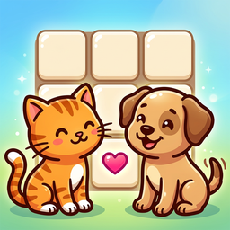
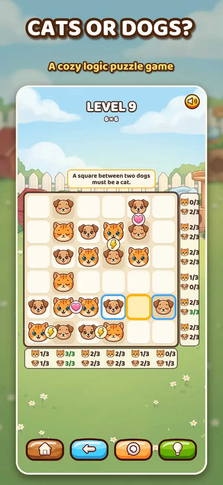
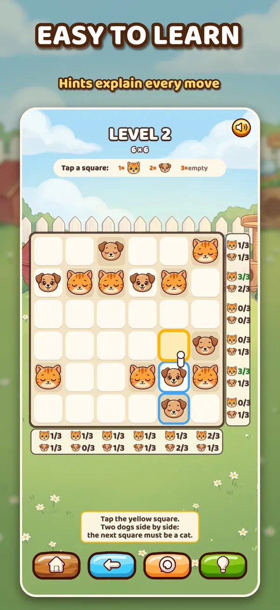
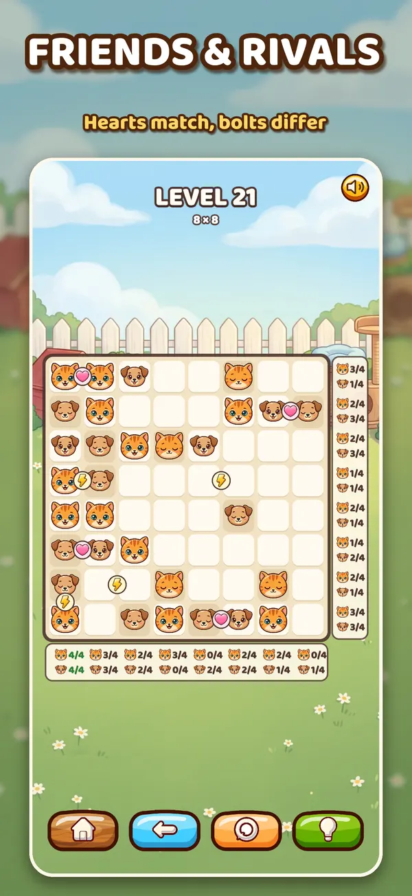
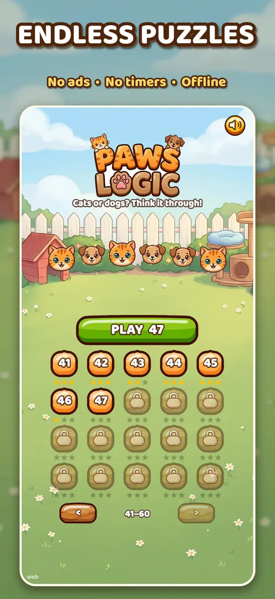

Paws Logic
The cozy cats and dogs logic puzzle for iPhone and iPad. Fill the grid so every row and column has as many cats as dogs, and never three of a kind in a row.




How to play
Fill every square with a cat or a dog.
- Tap a square once for a cat, twice for a dog, three times to clear it.
- Every row and column needs as many cats as dogs. The counters beside the grid show what each line is missing.
- Never put three of the same pet side by side in a row or column: they would start a fight!
- A heart between two squares means best friends: the same pet. A lightning bolt means rivals: different pets.
- Sleeping pets were placed for you and cannot be changed.
Endless puzzles
Grids grow from 4×4 to 12×12 and the puzzles never run out. Every puzzle has exactly one solution you can reach by pure logic, no guessing.
Every few stages a HARD level needs a cleverer deduction: imagine a pet in a square, and if it breaks a rule, the other pet goes there.
There are no lives, energy bars or timers. Undo as much as you like.
Questions
I am stuck. What can I do?
Tap the light bulb. It highlights the next square and explains why it must be a cat or a dog. If a pet is in the wrong square, the hint points it out first.
Where is my progress saved?
Your levels and stars are stored only on your device. Deleting the app removes them.
Does it need an internet connection?
No. Paws Logic works fully offline.
Are there ads or in-app purchases?
No.
How do I turn the sound off?
Tap the speaker button at the top right of the menu or of any level.
Support
Found a bug or have a question? Please open an issue on GitHub and we will get back to you.
Privacy
Paws Logic collects no data. Read the full privacy policy.